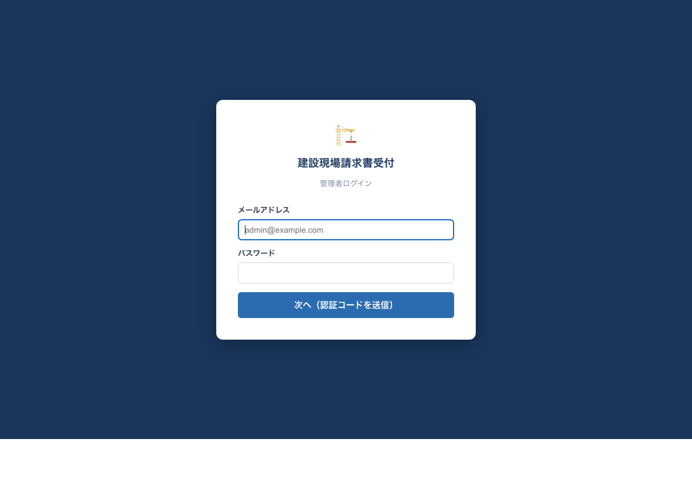
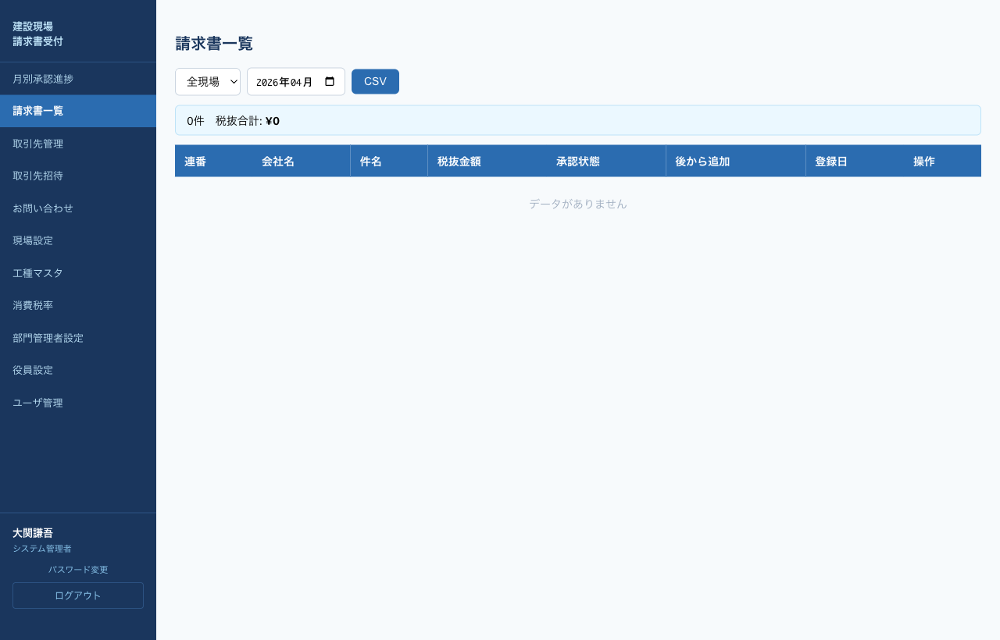

所長の役割
所長は 自分が担当する現場 の請求書について、内容を確認のうえ 1件ずつ工種明細を入力 し、承認／否認を行います。全件処理が終わったら、月単位で部長へ一括申請します。
Step 1. ログイン
管理画面URL https://kensetsu-invoice.soumubucho.com/admin/login にアクセスし、メールアドレス＋パスワード＋OTPでログインします（詳細）。

Step 2. 請求書一覧で未承認を確認
左メニューの「請求書一覧」をクリック。自分の現場の請求書のみが一覧表示されます。

画面上部の対象月セレクタで処理したい月を指定します。
承認状態が 提出済 の行を探し、右端の詳細ボタンで1件ずつ開きます。
Step 3. 請求書詳細 → 工種明細入力

「請求書ファイルを開く」リンクをクリックし、実物の請求書内容を確認します（PDF/Excel/Word等）。
「工種明細」エリアで 工種コード を選択し、対応する 税抜金額 を入力します。複数工種にまたがる場合は＋ 明細追加で行を増やします。
入力欄の上にある案内文で 明細合計 ／ 請求金額 をリアルタイム確認できます。
入力し終わったら明細を保存をクリック。保存されれば「明細を保存しました」と表示されます。
Step 4. 承認または否認
承認する場合
承認するをクリック。ステータスが 所長承認済 に変わります。
否認する場合
否認するをクリックし、表示される入力欄に否認理由を記入して否認を確定するをクリック。取引先に否認コメント付きのメールが自動送信されます。

「後から追加」請求書の受付承認
既に部長へ申請した月に、取引先が追加で提出した請求書には受付承認（後から追加）ボタンが表示されます。通常承認のあとに、このボタンで受付を行ってください。
Step 5. 月別承認進捗 → 部長へ申請
その月の請求書をすべて承認／否認し終わったら、次は「月単位で部長に一括申請」します。
左メニュー（または上部URL）「月別承認進捗」を開きます。自分が担当する現場のカードのみ表示されます。

ステージが 所長承認中 になっているカードには部長へ申請ボタンが表示されます。
請求書件数・税抜合計・所長承認済件数を確認し、問題なければ部長へ申請をクリック。部門管理者にメール通知が飛びます。
差し戻し（部長／役員否認）の対応
部門管理者または役員から月単位で差し戻された場合、所長宛に否認コメント付きメールが届きます。月別承認進捗のカードに否認コメントが表示されるので、対象の請求書を個別に修正または取引先に再提出を依頼してから、再度「部長へ申請」してください。
補足：取引先管理・招待・お問い合わせ
所長も下記メニューを利用できます。
- 取引先管理：自分の現場の取引先情報を確認・編集
- 取引先招待：新規取引先を招待（詳細は総務ページ）
- お問い合わせ：取引先からの問合せを閲覧・ステータス更新